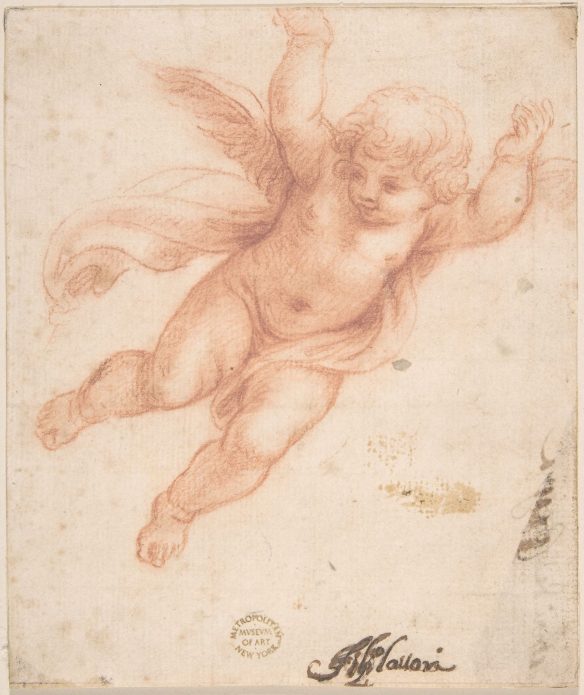

Beispiel · Offertanfrage
Name[Beispiel] AnliegenOfferte · [Beispiel]Eingang, sortiert
- [Beispiel] · Offertanfragesortiert
- Antwort gesendet (Beispiel)✓
- Termin[Beispiel]
Probier es
Beispiel · Offertanfrage
Name[Beispiel] AnliegenOfferte · [Beispiel]Eingang, sortiert
Probier es
Kapitel II · [Platzhalter: Erzählsatz zur Frage „Welche Arbeit nimmt mir das ab?", Mattia schreibt]
[Platzhalter: Unterzeile]

Beispiel · Anfrage
Nachricht[Beispiel]Automatische Antwort
[Platzhalter]
Beispiel · Eingang
Neu[Beispiel]Neu[Beispiel]Sortiert
[Platzhalter]
Beispiel · Termin
Wunsch[Beispiel]Termin steht
[Platzhalter]
Ende Kapitel II (Entwurf) · Stationen und Stellschrauben: README.md